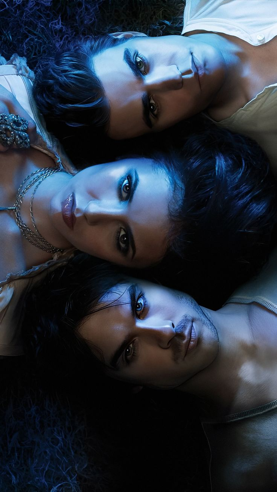

Após a morte dos pais em um acidente, Elena Gilbert tenta reconstruir sua vida na pequena cidade de Mystic Falls. Tudo muda quando ela conhece Stefan Salvatore, um misterioso jovem que guarda um grande segredo: ele é um vampiro. A situação se complica com a chegada de Damon Salvatore, o irmão mais velho de Stefan, um vampiro carismático e imprevisível.
Enquanto Elena se vê envolvida em um intenso triângulo amoroso, segredos antigos vêm à tona e a cidade revela um passado repleto de vampiros, bruxas, lobisomens e outras criaturas sobrenaturais. Ao longo das oito temporadas, alianças são formadas, traições acontecem e os personagens enfrentam escolhas difíceis entre amor, amizade e sobrevivência.
